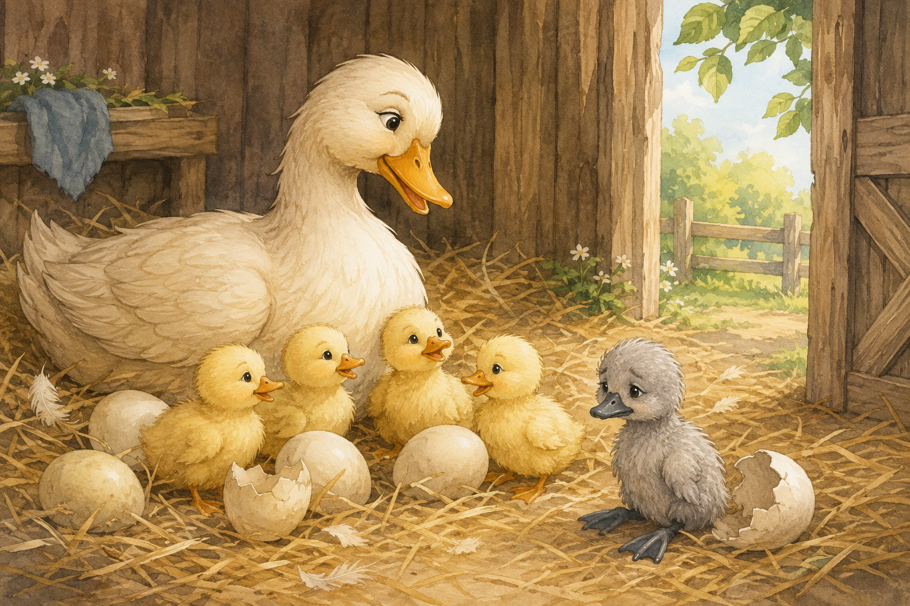

The Ugly Duckling
An illustrated story

It was beautiful in the country; it was summer-time. The wheat was yellow, the oats were green, and the hay was stacked up in the green meadows. A deep lake lay in the midst of the woods.

The little ducklings began to hatch one after another. Soon the nest was full of cheerful little ducklings. But one egg was larger than the others, and the mother duck waited patiently for it to hatch.
1 / 2